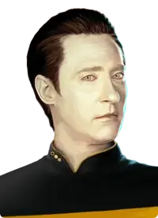

<div class="chat-container">
  <div class="messages" #messagesContainer>
    <div class="data">
      
      <h2>Hello, Captain.  I am awaiting your query...</h2>
    </div>
    <div *ngFor="let message of conversation" [ngClass]="message.role" class="message">
      <markdown>{{ message.content }}</markdown>
      <button (click)="copyMessage(message.content)">
        <svg xmlns="http://www.w3.org/2000/svg" width="24" height="24" viewBox="0 0 24 24" style="fill: rgba(0, 0, 0, 1)" class="copy">
          <path d="M20 2H10a2 2 0 0 0-2 2v2h8a2 2 0 0 1 2 2v8h2a2 2 0 0 0 2-2V4a2 2 0 0 0-2-2z"></path><path d="M4 22h10c1.103 0 2-.897 2-2V10c0-1.103-.897-2-2-2H4c-1.103 0-2 .897-2 2v10c0 1.103.897 2 2 2zm2-10h6v2H6v-2zm0 4h6v2H6v-2z">
          </path>
        </svg>
      </button>
    </div>
    <button class="scroll-to-bottom" (click)="scrollToBottom()">&#8595;</button>
    <div *ngIf="conversation.length && conversation.length %2 !== 0" class="assistant">
      <p>Processing query...</p>
    </div>
  </div>
  <form (submit)="sendMessage($event, messageInput.value)">
    <textarea #messageInput [(ngModel)]="userMessage" name="userMessage" (keydown.enter)="handleEnterKey($event)"></textarea>
    <button class="submit" type="submit">Send</button>
  </form>
</div>
